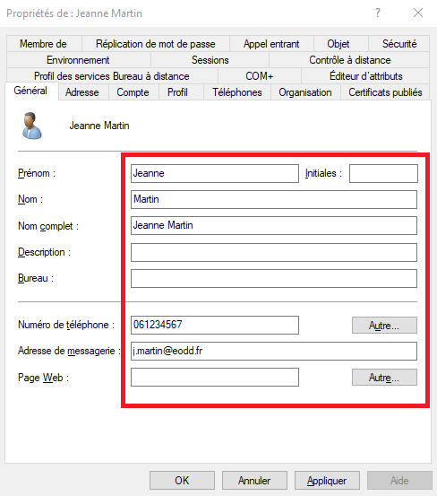
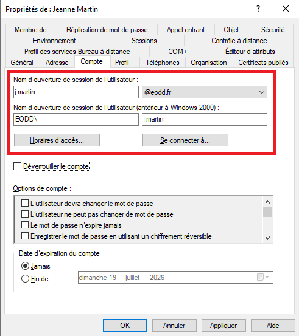

PROCÉDURE D'EXPLOITATION ACTIVE DIRECTORY
Lorsqu'un collaborateur modifie son état civil (mariage, changement de nom) ou que la convention de nommage interne impose une refonte de son identifiant, l'équipe d'administration système doit adapter l'ensemble de ses identités numériques sans rupture de service.
Dans une architecture d'entreprise hybride synchronisée avec Microsoft Entra Connect (ex-Azure AD Connect), l'Active Directory local est la Source Unique de Vérité (Source of Authority). Toute modification effectuée directement sur le portail cloud est immédiatement écrasée au cycle de synchronisation suivant.
Pour une modification unitaire assistée par la console MMC Utilisateurs et ordinateurs Active Directory (ADUC) :
- Ouvrir la console
dsa.mscavec un compte membre du groupe Administrateurs du Domaine. - Localiser le compte dans l'Unité d'Organisation (OU) cible, faire un clic droit et sélectionner Renommer.
- Renseigner les nouvelles valeurs d'état civil : Prénom, Nom, Nom complet, et le nouvel UPN (User Principal Name).
- Ouvrir les Propriétés du compte :
- Onglet Général : mettre à jour le champ Adresse de messagerie (ex:
j.martin@eodd.fr). - Onglet Compte : actualiser le Nom d'ouverture de session de l'utilisateur (
j.martin) et le nom pré-Windows 2000 (EODD\j.martin).
- Onglet Général : mettre à jour le champ Adresse de messagerie (ex:


objectGUID ni le SID du compte Active Directory. Les appartenances aux groupes de sécurité et les droits ACL d'accès aux partages NAS/SMB demeurent intacts.